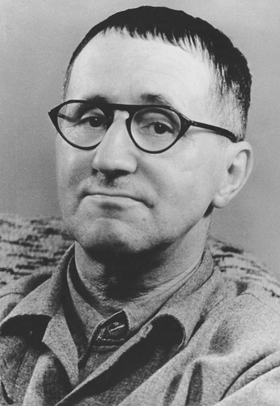
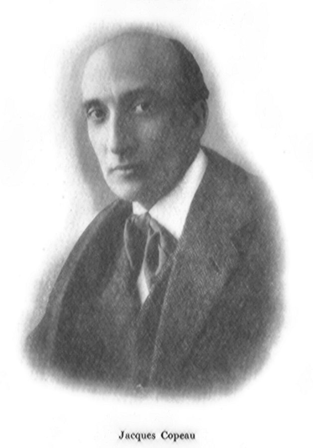

get things right
… when I try to get things right it’s a disaster …
译本：「但当我努力试着把事情做好，那就是灾难」
一想把事情做「对」，照着规矩不出错，就砸了
get it right 是「做对」，不只是「做好」。上一页里斯特林课上的学生也是一心想做对。全书反复出现这个对立：灵感来了一切都好，想做对就坏事。
自述的后半。作者进了伦敦的皇家宫廷剧院，读剧本、写戏、导戏，才华第二次溜走；在剧院的编剧小组和工作室里，他立下「能演出来的就别讨论」的规矩，带出一个什么都不准备的即兴剧团。最后一节换了文体，像写给老师的手册：第一堂课坐到地上，把失败的责任揽过来。读的时候抓两条线：后面四篇的方法是从哪儿来的，以及他怎样对付人在台上「怕被看」。
上一页停在伦敦巴特西的小学：他照美术老师斯特林的「不干预」去教全校最不受待见的孩子，成了。这一页他回到成人的世界，同样的故事又演了一遍：才华丢了，再靠反着常规做找回来。§12 他说自己的很多想法来自斯特林，§15 讲教法时又说，这套办法其实是从斯特林那里得来的，前后呼应。后面几篇的地位练习、一人一字的游戏、叙事课，在 §14 都能找到来历。
作者说人人都怕在台上被看，并借一套 1950 年代的恐惧症疗法来解释他的教法。他的依据是自己的课堂；那套疗法的原理，今天的心理学已经改写了。读的时候把他的教法和他借来的理论分开看。
一个两次弄丢自己才华的人，凭什么能教会别人即兴？
读的时候带着这几个问题。不用先找答案，读完回来对照「检查一下理解」。
前三节是编年的自述，节奏很快：进剧院，写一部挨骂的戏，当审读，导戏，再次觉得才华离开了自己，中间夹着一大段他年轻时的戏剧主张。然后是两件组织上的事：编剧小组和剧院工作室。§14 后半像一串回忆，从剧团巡演跳到「登台那天的心情」，再跳到他怎样重新开始写戏、到加拿大重新学会导戏。§15 突然换了文体，从自传变成写给老师的手册：先讲团体和老师的责任，再讲一个借来的心理学模型，再列学生躲避失败的几种小把戏，最后用和三岁儿子打闹的一件小事收尾。
作者落在哪：他的方法不是从戏剧理论推出来的，而是一次次丢了才华、反着常规做出来的。他认为教即兴的关键不在练习本身，而在师生关系：老师揽下失败，把「没天赋」当成「怕被看」来对付，学生不再想着赢，自发性才出得来。
这一页是原书和译本「关于我自己」的后四节。粗体是本站给的节名，下面是译本的小标题、这一节在译本电子书中开头的几个字（搜它就能跳过去），再下面是英文原文的开头。每节标了档：「先读」是这本书最精彩、不读就错过的，「有空」好看但跳过不丢线。读完打个勾。
先把这一页用到、作者默认你懂的几个概念讲一遍。讲的是概念本身，作者拿它推出什么，读原书时自己看。
恐惧症是对某样东西或某种场合过分、持续的害怕：怕鸟、怕空旷的地方、怕当众讲话。南非出生的精神科医生 Joseph Wolpe 在 1950 年代提出「系统脱敏」：先教病人放松，再把吓人的东西从轻到重排成一道「恐惧阶梯」，从最低一级开始，人在放松的状态下想象它或面对它，平静了再上一级。他的理论是：放松和焦虑不能同时存在。
换成程序员的例子：怕在全组面前做技术分享，可以先讲给一个同事听，再讲给三五个人，再到组会，最后才上台。作者在表演课上用的是相似的思路（他说其实是从斯特林那里来的）：学生在台上发僵，他不说「没天赋」，而把它当成一种可以一级一级化开的害怕。Wolpe 的那套原理今天已经被改写，见页末「今天怎么看」。
在这一页：§15 中段。作者说他在沃尔普的疗法里清楚看到了和斯特林那套想法的关联，并借来「全面恐慌就回到最底层」这一条。
人和动物打闹时，会用一些信号告诉对方：接下来这一下是闹着玩的。笑脸、夸张的动作、故意拖长的腔调；狗会把前腿趴下、屁股撅起来，邀对方来闹。人类学家 Gregory Bateson 在 1950 年代就讨论过：玩耍里的一口「咬」，代表的是咬，却不意味着真咬。同一个动作，带不带这个信号，意思完全不同。
日常的例子：朋友捶你一拳骂「你这家伙」，脸上带笑，你乐；板着脸说同一句，你就慌了。代码评审里一句「这写的什么鬼」，后面跟个笑脸表情和不跟，组里的气氛差得很远。老师、上司、父母发不发这种信号，决定了对面的人敢不敢放开。
在这一页：§15 最后一段。作者拿和三岁儿子打闹的事说明这种信号，然后说大多数老师不敢对学生发出它。
这一页还用到几个别页讲的概念：地位（§13、§15），斯特林的不干预（§12、§15），自发性（§14、§15），以及两个人的想象「相加还是相减」背后的接受和拒绝（block）（§14）。
作者在课上用过、照着就能玩的；个别几张是本站照书里的段落改的，卡里写明了来历。几个人、怎么玩、看什么写在卡片上；「先猜」那一栏是书里的课堂上发生了什么，先自己猜，或者先玩一次，再点开。全书的游戏卡汇总在游戏汇总。这一页的四张不是书里有名字的游戏，而是作者写下的规矩和教法，本站整理成能照着做的样子。
译本：「只要可演就不讨论」
作者说，小组马上变成了一个即兴小组。他们发现，当场编出来的东西可以和苦心写出的剧本一样好，甚至更好。剧作家 Edward Bond 后来说，编剧小组让他懂得：戏剧讲的是关系，不是人物。作者后来才知道，布莱希特排练时也不许讨论，要演员「试一试」。
作者说，他们先是笑，放松下来；这时他们几乎一定会开始从椅子上往下溜，因为不想坐得比他高。失败一下子没那么可怕了。他们当然也会试探他，他就真在他们失败时道歉。他说在其他条件相同时，大多数学生会成功，只是不再想着去赢。
作者说，紧张一下子释放出来，效果常常惊人，大学生甚至可能笑得满地打滚。他猜这种解脱来自发现别人也在用同样的花招。看上去「病了」的学生会突然显得「健康」，整个团体的态度可能立刻就变了。
按在书里出现的顺序排，标题前是节号。只讲到读懂这一页需要的程度。
1956 年，这个剧团在皇家宫廷剧院上演 John Osborne 的《愤怒的回顾》，这部戏常被看作英国战后戏剧的转折点，Osborne 也被归进「愤怒的青年」那一代作家。作者说投稿里九成九是抄别人的，他给它们起的外号「伪品特、仿奥斯本、假贝克特」，点名的正是 Harold Pinter、Osborne、Beckett 这几位当时的新派剧作家。
Samuel Beckett（1906–1989），爱尔兰作家，1969 年获诺贝尔文学奖。《等待戈多》法文版 1953 年在巴黎首演，英文版 1955 年在伦敦上演：两个流浪汉在路边等一个始终不来的人，几乎什么都没发生。作者说这是他当时唯一喜欢的戏，他的画家朋友都认定写戏的人一定和他们差不多年纪。其实 1956 年 Beckett 已经五十岁了。作者为这家剧院写的《布里克瑟姆帆船赛》就深受 Beckett 影响，1958 年上演，多数评论家很不友好。

作者引的是 Carl Weber 的回忆。Weber 1952 年进柏林剧团做戏剧顾问和演员，记下布莱希特的习惯：演员想解释怎么演，他就说排练时不要讨论，得试一试。作者紧接着挖苦了一句：可惜布莱希特的信徒没都学到大师这一点。布莱希特的理论名气大，作者看中的是他排练场上的做法。

作者用一句话交代了皇家宫廷剧院工作室的来历：Devine 是 Michel Saint-Denis 的学生，Saint-Denis 是 Jacques Copeau 的外甥。Copeau（1879–1949）是法国导演，1913 年在巴黎创办老鸽巢剧院（Théâtre du Vieux-Colombier），把演员训练本身当成剧院的事。Saint-Denis（1897–1971）1930 年代到伦敦，和 Devine 等人办了伦敦戏剧工作室（London Theatre Studio），二战后又一起办老维克戏剧学校。所以 Devine 想要一个工作室，是接着这条法国传统。
「规定情境」（given circumstances）是斯坦尼斯拉夫斯基体系的说法：剧本给定的时间、地点、人物处境，演员从这些出发去找人物要什么（斯坦尼斯拉夫斯基其人见姿态第 1 页）。Spolin 的即兴也从先定好「谁、在做什么、在哪里」开始。作者嫌这两样都太束缚，他说幸好 1966 年才读到 Spolin 的书：没有现成的办法，只好自己找。这是即兴教学的两条源头，美国一条，作者这一条。
Morley College 是伦敦一所老牌的成人学校，作者在那里教当代戏剧课，先把工作室的练习搬到那里的学员面前。后来他只留四五个演员，在教育部的支持下到学校和学院里巡回，起名「戏剧机器」（Theatre Machine），书里说英国文化协会还派他们去欧洲各地演出。§14 末尾他在加拿大温哥华岛的维多利亚导了韦克菲尔德连环剧：中世纪英格兰一组根据圣经故事改编的宗教剧，三十来出。书外：1975 年他移居卡尔加里，在卡尔加里大学任教，1977 年参与创办 Loose Moose 剧团，在那里发展出 Theatresports 等即兴比赛形式，2023 年在卡尔加里去世。
书里提到别的心理学家用 pentothal 帮病人放松。这是硫喷妥钠，一种起效很快的巴比妥类全身麻醉药。作者顺手加了一句括号：放松要出于本人的意愿，单靠让肌肉松掉的药，可以拿来当刑具。
读译本时值得翻一下原文的地方：双关、行话、口语，和译本传不出的语气。灰色斜体是原文里的一小段，在英文电子书里搜它就能找到；方框里是译本这一句的译法。译错的放在下一节「译本勘误」。
对着译本读这四节时，下面这些地方会把人读歪。方框里是译本的原句，在译本电子书里搜它就能找到；灰色斜体是英文原文那一处。只收意思错了、反了、漏了的，措辞上的出入不收。全书的勘误汇总在译本勘误。
… precisely because I didn’t exercise my taste …
译本：「是因为我没有训练自己的口味」
exercise 在这里是「动用」：他先只问一件事，这是不是抄来的，快速分拣，不拿个人好恶去判，所以又快又准。译本读来像是他的品味没经过训练，反倒成了成功的原因。
… be involved in a lot of heart-searching …
译本：「还会有一些我能感受到的心灵探索」
heart-searching 是「反复掂量、心里犯难」。他原以为剧本会从烂到好排成一道缓坡，自己得为每一本的取舍苦苦斟酌；结果几乎全是彻底的失败之作，活儿反而轻松。译本像是在说剧本里会有心灵探索。
… cancel a rehearsal, but never a discussion
译本：「宁愿排练泡汤也不愿陷入讨论」
原文：他认识的一些欧洲政治剧团，随时愿意取消一次排练，却绝不取消一次讨论。正和作者相反，所以他才说自己的偏见很英国。译本说成那些剧团宁可不排练也不愿讨论，意思颠倒了。
… as I was on the staff …
译本：「由于我曾教过书」
on the staff 是「我是剧院的在编员工」。Devine 找他去教，是因为他本来就在剧院里，又满肚子理论；他紧接着说自己根本不懂怎么训练演员。译本像是说他凭教书的资历被选中。
… we often found ourselves on a stage
译本：「我们经常觉得自己所站之处即舞台」
到了学校，他们常常真被安排在舞台上（stage 原文是斜体），不是在教室的地板上，于是不知不觉从示范练习变成了演出。译本写成了一种心理感受。
… deserts of time seem to lie ahead …
译本：「你时刻在开小差」
状态不好的晚上，眼前的演出时间像一片片荒漠，怎么也熬不到头。说的是时间难熬，不是人走神。
… scene after scene is about vomiting
译本：「每一个场景都想吐」
原文：演员难受得厉害，即兴出来的场景一个接一个都在演呕吐，状态差，连编出来的内容都跟着变糟。不是演员自己想吐。同一句的 wretched 是「很惨、很难受」，不是「厌烦了」。
… you expect to be loved …
译本：「你渴望被爱」
expect 原文是斜体，意思是「理所当然地等着观众来爱你」：演出顺了几场，人就骄傲起来，接着就像西西弗斯一样又滚回山脚。「渴望」是想要而得不到，口气反了一截。
… deliberately put myself in this position
译本：「刻意把自己放在编剧的位置上」
this position 指前面那种处境：戏名已经登了报，下周就要演，戏还没写。从那以后他故意让自己陷进这种局面：先让剧团雇下，边排练边写。译本加了「编剧的位置」，被逼着赶工这层意思没了。
… the morass from which I’m still freeing …
译本：「也不知道我仍然深陷泥沼」
原文是「我至今还在一点点挣脱的那片泥沼」：没完全出来，但在出来。「仍然深陷」像是毫无进展，和同一段开头「现在一切都很容易」打架。同句的 turgid 是「臃肿、滞涩」，指他从前写不顺、憋着的状态。
… almost certainly start sliding off their chairs
译本：「他们几乎都要从椅子上滑下来了」
almost certainly 是「几乎一定会」：这时学生多半真的开始从椅子上往下坐，因为不想比坐在地上的他高。译本「几乎都要滑下来了」读来像差一点、并没有真溜下来。
… a very dilute form of the thing …
译本：「所恐惧之物的非常模糊的状态」
dilute 是「稀释、冲淡」：先给害怕的东西一个很弱的剂量，比如怕鸟的人先想象一只远在澳大利亚的鸟。要点是不那么吓人，不是看不清楚。
… drugs can be used as a torture
译本：「用肌肉松弛剂是种折磨！」
原文是「肌肉松弛剂是可以被用作刑具的」：肌肉松了，人却并不想放松，那是折磨。他在说放松必须出于本人的意愿，不是说用这种药本身就是折磨。
… at the bottom of the hierarchy
译本：「那么治疗必须再次从底层结构开始」
hierarchy 是脱敏疗法里事先排好的「恐惧阶梯」，从最不吓人到最吓人。恐惧全面复发，就要回到阶梯最低的那一级重来。「底层结构」读不出这是一级一级的台阶。
… is, unfortunately, novel to them
译本：「他们当真觉得老师会对这些事情感兴趣」
原文：老师居然会关心这些小把戏，对学生来说是头一回，作者说这很可惜。译本说成学生当真以为老师会感兴趣，意思反了。
… sitting on the end of the row
译本：「我还解释了一些诸如坐在最后一排的策略」
原文是坐在一排座位的最边上（end 原文是斜体），不是最后一排。坐在边上，你就把自己和团体隔开了一点。
… they mustn’t try to control the future …
译本：「不必试图控制未来」
mustn’t 是「不许」。这是他给学生定的规矩，用来交换「失败就怪我」；「不必」听来只是可以不这样做。下一句说，正是这个不去控制未来的决定，让学生能自发。
Instead of seeing people as untalented, we can see them as phobic, and this completely changes the teacher’s relationship with them.— §15。本站译：与其把人看成没天赋，不如把他们看成有恐惧症；这样一来，老师和他们的关系就全变了。
这句话的口气是给老师换一副眼镜，不是一个关于人的判决：作者说的是「可以看成」（can see them），后半句讲的也是看法带来的后果，师生关系变了。untalented 和 phobic 原文都是斜体，一个是评判，一个是诊断，诊断意味着能治。译本：「把他们当作有恐惧症的人」。容易被读成「世上没有天赋差别」，他没这么说。
I began to think of children not as immature adults, but of adults as atrophied children.— §12。本站译：我开始觉得，孩子不是没长成的大人，大人倒是萎缩了的孩子。
全篇的名句，把常识倒过来说，很像他九岁起养成的「把每句话倒过来」的习惯。关键词 atrophied 是医学词「萎缩」，像长期不用的肌肉，意思是本来有、后来废了，而不是自然地老了。译本：「大人是退化了的孩子」。口气上留意 I began to think：这是他的一个想法，不是论证；下一句他说，教育家听了很生气。
读完这一页的四节再看。下面是作者在这几节里的主张，由本站按主张重新组织，不按原书的顺序；每条后面是节号，拿不准就回书里那一节再读一遍。
他说自己当上剧院最好的审读，是因为不凭口味、只分真假；投稿多半失败，不是缺才华，而是受了错误的教育。导戏起初顺利，可越懂得「应该」怎么做，导出来的越无聊，才华第二次离开了他。他由此说大多数人在青春期就丢了才华，开始把大人看成萎缩了的孩子。
§12编剧小组定下「能演的不讨论」，立刻成了即兴小组。他的理由：最好的论证也许只证明讲的人口才好；讨论时间大多耗在地位较量上；他也承认这偏见很英国。在工作室，他有意反着斯坦尼斯拉夫斯基来（他说自己当时理解错了），专注陌生人之间的关系和两人想象的相加，地位往来、一人一字的游戏都从这里来。
§13 §14戏剧机器什么都不准备；他故意让剧团先雇下自己、边排边写，说这样写出的戏不比苦熬多年的差；到了远离在乎的评论的维多利亚，他才重新会导戏，从此像对导演一无所知那样，只找最直白的办法。他也说演出会让人骄傲，一骄傲就又滚回山脚。
§14他说好老师用什么方法都能出成果，坏老师能毁掉任何方法；团体状态不好，老师必须怪自己。他第一堂课（多半）坐到地上，说失败就怪他：身体上演低，实际地位在升。失败没那么可怕了，在其他条件相同时，大多数学生会成功，只是不再想着赢。他还练着把目光分给每个人、多说正面的话。
§15他认为人人都怕在台上被看，用一种类似沃尔普渐进脱敏的办法（他说其实是从斯特林那里来的）去化开它，不断回到最初几步去拉还吓坏着的学生；点破学生躲失败的小把戏；要学生别去控制未来，只管看会发生什么。他说大多数老师不敢发出「我在玩」的信号。
§15合起来：这一页交代了全书方法的来历和用法。作者觉得练习本身是次要的：先要有一种老师不怕放低自己、学生不怕失败的关系，自发性才放得出来。
这一篇合起来：序言作者 Irving Wardle 说，这本书是作者怎样逃出困境的故事。作者自己从小讲起：他认为自己眼里的世界变灰、才华溜走，不是年纪的必然，而是教育造成的，好老师和坏老师干的是相反的事。美术老师斯特林不示范、不评好坏，认为不该让学生经历失败；他把这套「不干预」用到巴特西「不可教」的孩子身上，成了。到了剧院，才华又丢了一次，他靠能演就不讨论、反着常规做找了回来，攒下后面几篇的地位、一人一字等练习。最后他告诉读者：照抄练习也许不够，可能得照他的方式教，揽下失败，把怕被看当成可以治的害怕。
这本书 1979 年出版。下面挑出这一页里能被后来的研究检验的说法，分「书里 / 当时 / 今天」三栏，并给一个结论。结论判的是标题里「书里的说法：」后面那一句。全书的这一节汇总在今天怎么看。
读完作者的主张，再看它站不站得住。每一块摆出三样：主流怎么看，作者怎么看，本站的评论。最后一句是本站对这一页的总体判断。
主流看法：社会心理学对「一群人边说边想」评价不高：Diehl 和 Stroebe 1987 年的实验发现，同样人数各想各的再汇总，点子比面对面头脑风暴多，主要原因是大家轮流说话，互相堵住了念头。设计和软件行业也常说先做个原型再争。不过需要交换信息、做有后果的决定时，讨论仍然少不了。
作者的看法：能演出来的就别讨论；最好的论证也许只证明讲的人口才好；讨论时间大多耗在地位较量上；他承认这偏见很英国。§13
本站的评论：用在即兴和创作上，这条规矩好得惊人：演两分钟，常比争二十分钟清楚。有意思的是，他给讨论下的诊断（地位较量）和实验找到的主因（互相堵住）不一样，开的药方却有相通之处：少空谈，先把东西做出来看。他自己把它降格为「很英国的偏见」，这份自知也值得一起带走：它是创作现场的规矩，不是「讨论没用」的定理。爱迪生的例子也只说明试错有时赢过理论。
主流看法：组织行为学家 Amy Edmondson 1999 年研究一家制造企业的 51 个团队，提出「心理安全感」：成员共同相信，在这里冒人际风险（提问、认错、试新办法）是安全的。心理安全感高的团队，学习行为更多。
作者的看法：第一堂课坐到地上，失败就怪他；这样失败就没那么可怕了，大多数学生会成功，只是不再想着赢，常规的师生关系就此消散。§15
本站的评论：这和二十年后的「心理安全感」相通，像它的一个课堂版本，而且他还多看到一层：揽责本身也是一次地位操作，表面放低、实际抬高，所以只有有底气的人做得出来。要打折扣的地方：「我的方法很有效」是他自己的话，没有对照组；照搬这一招的人如果没有他的底气和真心，学生也许只觉得是客套。他说要「真的」道歉，正是这个意思。
主流看法：怕当众表现很普遍（见上面「今天怎么看」），也确实会拖累表现。但人和人的差别不全是怕，也不全是练：Macnamara 等 2014 年汇总了几十年的研究，发现刻意练习只能解释音乐表现差异的约两成、游戏的约四分之一，其余要靠别的因素来解释。
作者的看法：我们都怕在台上被看；与其把人看成没天赋，不如看成有恐惧症，师生关系会因此全然不同。§15
本站的评论：当作老师的工作假设，这是全篇最好的一句：把学生看成吓坏了，你会去找让他不怕的那一步，而不是放弃他。当作关于人的事实，它说过头了：天分和练习的差别都在，不是每个上台发僵的人都只是害怕。好在他自己的措辞留了余地，说的是「可以看成」，不是「其实就是」。
本站的总体看法：这一页是全书最好用的教学手记之一。值得带走：能演就别空谈，老师先揽下失败，把「没天赋」当作「怕」来对付，对人发出「我在玩」的信号。要打折扣的是他借来的心理学：沃尔普的原理今天已经改写，「人人都有恐惧症」也说得太满。他的证据是自己的课堂，好在他常常先承认这一点。
先在心里答，再点开。答错的那题，回书里把对应那一节再读一遍。
他说不是缺才华，而是受了错误的教育：这些作者以为写作该照着别的作品写，而不是照着生活。他先飞快地读，把仿冒之作归进「伪品特」「仿奥斯本」一类，只细读那些看起来出自作者亲身经历的。
他觉得该好好钻研这门手艺，可越懂得事情「应该」怎么做，导出来的戏越无聊。他说灵感来时一切都好，一想把事情做对就是灾难。
他向 Gaskill 提议：凡是能演出来的都不讨论。Gaskill 同意了，大家改成当场演，发现临场编出来的东西可以和苦心写的文本一样好，甚至更好。
他以为斯坦尼斯拉夫斯基的方法意味着自然主义戏剧，其实不然。他嫌「规定情境」太束缚，也不喜欢「谁、什么、哪里」，就自己找办法：专注陌生人之间的关系，让两个人的想象相加，做出了地位往来和一人一字的游戏。
因为只有非常自信、有经验的人，才敢主动替别人的失败担责，所以他的实际地位反而在升。这时学生多半开始从椅子上往下溜，因为不想坐得比他高。
治疗中途如果全面的恐惧复发，就得回到恐惧阶梯的最底层重来。所以他不断回到练习最初的几步，去拉那些还吓坏着、几乎没进步的学生。
像他说的「装出力不从心」：失败了能博同情，成功了显得更了不起。作者说这种垂头丧气几乎注定失败，大家也会烦；小时候也许管用，成年人这样做没人同情。
用一句话说这一页：
想一想：回想你最近一次学一样新东西，或者第一次在一群人面前做事。你用过哪一种躲失败的小把戏？如果那时带你的人先说一句「做不好怪我」，或者先冲你笑一下，会有什么不同？
读过又忘了，从这里想起来。挑的是这一页最值得记住的故事、游戏和说法，不按原书顺序；每条后面是节号，想细看就回书里那一节。全书各页的这一节都收在全书回顾。
一句话：照抄练习也许不够，可能得照他的方式教：老师先放低自己、揽下失败，把「没天赋」看成「怕被看」，学生不再想着赢，自发性才出得来。
他靠一个问题分拣投稿：这是不是抄来的？九成九是，活儿很轻松。他成了剧院最好的审读，恰恰因为不凭自己的口味。
§12越懂导戏的规矩，戏越无聊，才华第二次溜走。他开始把大人看成萎缩了的孩子，教育家听了很生气。
§12编剧小组的会乏味透顶，他立了一条规矩：能演的就别讨论。小组立刻变成了即兴小组。
§13报纸登出他一部新戏的广告，可他从没写过。剧院说下周就要一部戏，这个名字行吗？他写了，反响不错，从此故意把自己逼进这种局面。
§14第一堂课他多半坐到地上，说失败就怪他。学生笑了，松了，接着开始往椅子下面溜，不想坐得比他高。
§15轻轻一下，儿子读成「当真」就嚎哭；重重一下，读成「闹着玩」，可能就笑。作者说大多数老师不敢对学生发出「我在玩」的信号。
§15